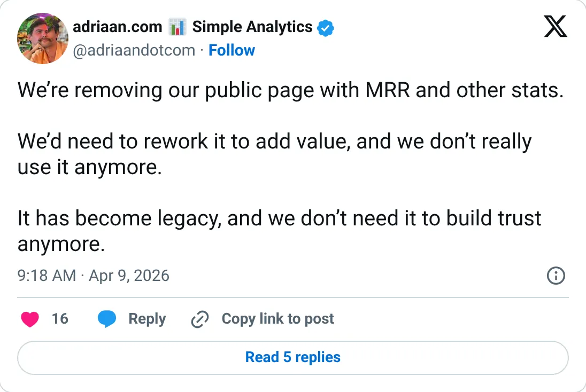

Not a pick
Simple Analytics
The ledger looks real. It is not one of the clearer things to start next.
$38,176 MRR
Should you build this
The money looks real, and it is still not a recommendation to start a copy. Simple Analytics removed its public MRR page and left a short trail: one TrustMRR snapshot, $38,176 MRR on October 8, 2026, and $1.9M all-time. The founder's bio says $45K+. That is about an 18% polish on the processor number, the mild kind. There is no monthly history here to see churn. The headline itself matches Stripe, so it holds, with the bio treated as marketing.
Cited from the captured posts, shown below: the key post (Apr 9, 2026) is the source for “Removed the public MRR page”.
Posts this is based on

Removed the public MRR page
Open on X
What the product is
Privacy-first, cookie-free web analytics from the Netherlands. A GDPR-friendly Google Analytics alternative since 2018.
⚠ Thin timeline: only the current verified figure is available (the public MRR page was removed).